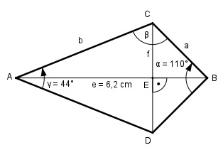

Aufgabe 160 Wie groß ist die Diagonale f des Drachenvierecks?

β = 180° - α/2 – γ/2 = 180° - 55° - 22° = 103° Im Dreieck ABC: Fall SWW: Sinussatz: e b ------- = --------- |*sin α/2 sin β sin α/2 e * sin α/2 b = -------------- = sin β 6,2 cm * sin 55° 6,2 cm * 0,8192 = ------------------ = ----------------- = 5,2 cm sin 103° 0,9744 Im Dreieck ADC: f/2 sin γ/2 = ----- |*b b f/2 = b * sin γ/2 | *2 f = 2*b*sin γ/2 = = 2 * 5,3 cm * sin 22° = 2 * 5,2 cm * 0,3746 = = 3,9 cm